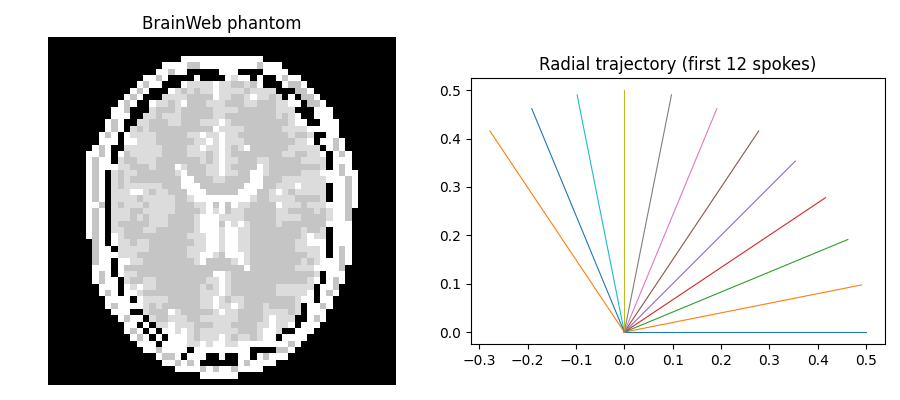
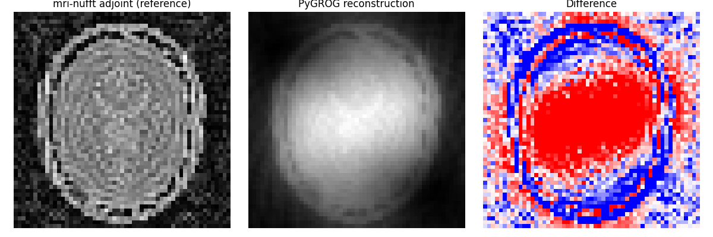

Note
Go to the end to download the full example code.
Basic Usage: mri-nufft Baseline vs PyGROG#
This example follows a realistic non-Cartesian pipeline:
Use
brainweb-dlto load a brain phantom.Use
mri-nufftto generate the trajectory, sensitivity maps, non-Cartesian k-space data, and a reference adjoint reconstruction.Use
GrogInterpolatorto grid and reconstruct, then compare PyGROG against the mri-nufft reference.
import matplotlib.pyplot as plt
import numpy as np
from mrinufft import get_operator, initialize_2D_radial
from mrinufft.density import voronoi
from mrinufft.extras import get_brainweb_map
from pygrog.calib import GrogInterpolator
def _load_brainweb_slice(step=4):
"""Load and normalize a 2-D BrainWeb slice."""
m0, _, _ = get_brainweb_map(0)
image = np.flip(m0, axis=(0, 1, 2))[90]
image = np.ascontiguousarray(image[::step, ::step].astype(np.float32))
image /= image.max() + 1e-8
return image
def _synthetic_smaps(shape, n_coils=4):
"""Create smooth multi-coil maps used to simulate acquisition."""
ny, nx = shape
yy, xx = np.mgrid[-1 : 1 : ny * 1j, -1 : 1 : nx * 1j]
smaps = []
for angle in np.linspace(0.0, 2.0 * np.pi, n_coils, endpoint=False):
cx, cy = np.cos(angle), np.sin(angle)
gauss = np.exp(-((xx - cx) ** 2 + (yy - cy) ** 2) / (2.0 * 0.45**2))
phase = np.exp(1j * (cx * xx + cy * yy))
smaps.append(gauss * phase)
smaps = np.asarray(smaps, dtype=np.complex128)
smaps /= np.sqrt((np.abs(smaps) ** 2).sum(0, keepdims=True)) + 1e-12
return smaps
def _rss(coil_images):
return np.sqrt((np.abs(coil_images) ** 2).sum(axis=0))
BrainWeb image + radial trajectory#
image = _load_brainweb_slice(step=4)
shape = image.shape
n_coils = 4
samples = initialize_2D_radial(Nc=32, Ns=256)
density = voronoi(samples)
fig, axes = plt.subplots(1, 2, figsize=(9, 4))
axes[0].imshow(image, cmap="gray", origin="lower")
axes[0].set_title("BrainWeb phantom")
axes[0].axis("off")
axes[1].plot(samples[:12, :, 0].T, samples[:12, :, 1].T, linewidth=0.8)
axes[1].set_aspect("equal")
axes[1].set_title("Radial trajectory (first 12 spokes)")
plt.tight_layout()
plt.show()

mri-nufft: trajectory + k-space generation + reference reconstruction#
smaps_true = _synthetic_smaps(shape, n_coils=n_coils)
nufft_sim = get_operator("finufft")(
samples=samples,
shape=shape,
n_coils=n_coils,
smaps=smaps_true,
density=density,
squeeze_dims=True,
)
kspace_nc = nufft_sim.op(image.astype(np.complex128)) # (n_coils, n_samples)
nufft_ref = get_operator("finufft")(
samples=samples,
shape=shape,
n_coils=n_coils,
smaps=smaps_true,
density=density,
squeeze_dims=True,
)
image_ref = nufft_ref.adj_op(kspace_nc)
print(f"k-space shape : {kspace_nc.shape}")
print(f"ground-truth smaps : {smaps_true.shape}")
/home/mcencini/.conda/envs/pygrog/lib/python3.13/site-packages/mrinufft/_utils.py:67: UserWarning: Samples will be rescaled to [-pi, pi), assuming they were in [-0.5, 0.5)
warnings.warn(
/home/mcencini/.conda/envs/pygrog/lib/python3.13/site-packages/mrinufft/_utils.py:67: UserWarning: Samples will be rescaled to [-pi, pi), assuming they were in [-0.5, 0.5)
warnings.warn(
k-space shape : (4, 8192)
ground-truth smaps : (4, 55, 55)
PyGROG: calibration, gridding, reconstruction#
# Calibrate GROG from Cartesian calibration data derived from image + smaps.
coil_calib = smaps_true * image[None, ...]
calib_cart = np.fft.fftshift(
np.fft.fftn(np.fft.ifftshift(coil_calib, axes=(-2, -1)), axes=(-2, -1)),
axes=(-2, -1),
).astype(np.complex64)
# mri-nufft coordinates are in [-0.5, 0.5): scale to PyGROG grid units.
coords = (samples * np.asarray(shape, dtype=np.float32)).astype(np.float32)
grog = GrogInterpolator(shape=shape, coords=coords, kernel_width=2, image_shape=shape)
grog.calc_interp_table(calib_cart, lamda=0.01, precision=1)
# GrogInterpolator expects (n_coils, n_shots, n_readout).
kspace_nc_shaped = kspace_nc.astype(np.complex64).reshape(n_coils, *samples.shape[:2])
# sparse neighbourhood-expanded Cartesian samples
kspace_sparse = grog.interpolate(kspace_nc_shaped, ret_image=False)
print(f"PyGROG sparse shape : {kspace_sparse.shape}")
# dense image reconstruction convenience (SparseFFT.forward + RSS internally)
image_grog = grog.interpolate(kspace_nc_shaped, ret_image=True)
PyGROG sparse shape : (4, 24536)
Comparison#
ref_abs = np.abs(image_ref)
ref_abs /= ref_abs.max() + 1e-12
grog_abs = np.abs(image_grog)
grog_abs /= grog_abs.max() + 1e-12
nmse = ((grog_abs - ref_abs) ** 2).mean() / ((ref_abs**2).mean() + 1e-12)
print(f"PyGROG vs mri-nufft adjoint NMSE: {nmse:.3e}")
fig, axes = plt.subplots(1, 3, figsize=(12, 4))
axes[0].imshow(ref_abs, cmap="gray", origin="lower")
axes[0].set_title("mri-nufft adjoint (reference)")
axes[0].axis("off")
axes[1].imshow(grog_abs, cmap="gray", origin="lower")
axes[1].set_title("PyGROG reconstruction")
axes[1].axis("off")
axes[2].imshow(grog_abs - ref_abs, cmap="bwr", origin="lower", vmin=-0.2, vmax=0.2)
axes[2].set_title("Difference")
axes[2].axis("off")
plt.tight_layout()
plt.show()

PyGROG vs mri-nufft adjoint NMSE: 2.372e-01
Total running time of the script: (0 minutes 1.704 seconds)